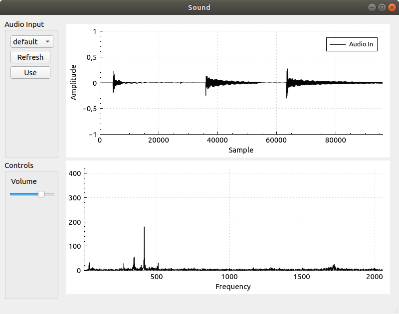

This program is based upon the earlier Audio input using Qt and QAudioInput text and adds a second QCustomPlot that will be displaying the discrete Fourier transform (DFT) of the audio in a 2 second sliding window.
To compute the DFT, the FFTW3 library will be used. To install FFTW3 on Ubuntu all you need to do is sudo apt-get install libfftw3-dev. If you are on Windows, you should be able to just go download some package of files from www.fftw.org.
The final result will be a GUI like the one in the picture below.

How to construct the GUI is as usual left out. I don't really see how that could be efficiently done in text. I am also not very good at making GUIs.
Now, the program developed in this text is a small experiment for fun and we wont really be doing anything with the data in the second plot (the DFT output). If you don't know much about the Fourier Transform (like me) take a look this video from Three Blue one Brown that does a good job of explaining what is going. But in short, if you don't want to watch a video the output will show (with a spike in the plot) the presence of a frequency within in the audio. So if you were to play a tone, say at 440Hz there should appear a spike at 440 along the x-axis in the graph. So it does give you some interesting insights into the audio waveform.
If the FFTW3 libraries are installed then all that is needed should be to add the following line to your Qt project .pro file.
unix|win32: LIBS += -lfftw3You can also right click on your project in the Projects explorer within Qt Creator and select option Add Library... that starts up a kind of library adding wizard.
Since the code is mostly identical to the previous post, we will only look at the new additions in any detail.
To get started, let's jump into mainwindow.h and take a look at the new bit of private state added to the MainWindow class.
QVector<double> mFftIndices;
fftw_plan mFftPlan;
double *mFftIn;
double *mFftOut;First there is a QVector called mFFtIndices this will be frequencies and is used in the drawing of the FFT plot. More about this when it is filled with values in the MainWindow constructor.
Next up is an fftw_plan. FFTW is very clever software that will try and find optimal code for the particular system it is running for solving the task we ask of it. The mFftPlanobject will initialized in the MainWindow constructor.
Lastly there are two pointers, mFftIn and mFftOut. Arrays will be allocated for input and output data that we use together with the FFTW_plan. These will also be initialized in the MainWindow constructor.
Oh, and then we need to also include the fftw3 header!
#include <fftw3.h>But with that done, we are finished in the mainwindow.h file. mainwindow.h is shown in its entirety below.
#ifndef MAINWINDOW_H
#define MAINWINDOW_H
#include <QMainWindow>
#include <QtMultimedia/QAudioInput>
#include <QBuffer>
#include "qcustomplot.h"
#include <fftw3.h>
QT_BEGIN_NAMESPACE
namespace Ui { class MainWindow; }
QT_END_NAMESPACE
class MainWindow : public QMainWindow
{
Q_OBJECT
public:
MainWindow(QWidget *parent = nullptr);
~MainWindow();
private slots:
void on_refreshInputPushButton_clicked();
void on_useInputPushButton_clicked();
void processAudioIn();
void stateChangeAudioIn(QAudio::State s);
void on_volumeHorizontalSlider_sliderMoved(int position);
private:
Ui::MainWindow *ui;
void samplesUpdated();
QList<QAudioDeviceInfo> mInputDevices;
QAudioInput *mAudioIn = nullptr;
QBuffer mInputBuffer;
QVector<double> mSamples;
QVector<double> mIndices;
QVector<double> mFftIndices;
fftw_plan mFftPlan;
double *mFftIn;
double *mFftOut;
};
#endif // MAINWINDOW_HNow we can turn to the mainwindow.cpp file and take a look at what is new there. To start with, I added a few defines in order to name some constants used in the program.
#define AUDIBLE_RANGE_START 20
#define AUDIBLE_RANGE_END 20000 /* very optimistic */
#define NUM_SAMPLES 96000
#define SAMPLE_FREQ 48000First I have defined the audible range of frequencies. That range will be used to narrow down which results in the DFT output data that we are interested in. Then NUM_SAMPLES is the number of samples that we store in our 2 second sliding window. SAMPLE_FREQ is of course the frequency we sample our input at. At a sampling frequency of 48KHz, the frequencies should be uniquely identifiable using DFT but signals above half of 48KHz could produce the same DFT output, given the Nyqvist sampling theorem. My understanding of these concepts is quite limited! But we can all keep learning as long as we are alive.
What we will look at in the rest of this text is:
The first four of these activities take place in the constructor for the MainWindow object.
/* Setup plot 2 */
ui->plot2->setInteractions(QCP::iRangeDrag | QCP::iRangeZoom);
ui->plot2->legend->setVisible(false);
ui->plot2->yAxis->setLabel("");
ui->plot2->xAxis->setLabel("Frequency");
ui->plot2->xAxis->setRange(AUDIBLE_RANGE_START, AUDIBLE_RANGE_END);
ui->plot2->yAxis->setRange(0.0, 500.0);
ui->plot2->clearGraphs();
ui->plot2->addGraph();
ui->plot2->graph()->setPen(QPen(Qt::black));
ui->plot2->graph()->setName("fft");The newly added QCustomPlot us called plot2 and is here set up to not have any visible legend, the x-axis will range over the audible range of frequencies and the y-axis will range over 0 - 500. Now, these ranges are scalable and drag-able with the mouse when the program is running, so you can zoom in on a subrange of frequencies and look at the behavior of the sound at that point in more detail.
Next it is time to set up the indices for the plot that will be displayed as the x-axis labels. Here, an indices are created starting with the lowest audible frequency and then we keep adding freqStep to this until we reach the end of the audible range. The reason for this is that the output array produced by FFTW will not show a response for frequency f at index f, that response will rather be seen at index = (NUM_SAMPLES/SAMPLE_FREQ) * f. This means, in our case, that the output array will at index X have the response for frequency (1/2)X. So the function below creates a list of indices to display in the GUI that makes it so that the response for frequency X appears over the number X in the graph. Bah! I think this is quite on the edge of what I manage to explain. If you know of a good clear explanation, please share it with me and I'll edit for its inclusion.
double freqStep = (double)SAMPLE_FREQ / (double)NUM_SAMPLES;
double f = AUDIBLE_RANGE_START;
while (f < AUDIBLE_RANGE_END) {
mFftIndices.append(f);
f += freqStep;
}This creates more indices than we will probably ever use though, we will trim that later.
Ok now we got to the setup of the FFTW related things.
mFftIn = fftw_alloc_real(NUM_SAMPLES);
mFftOut = fftw_alloc_real(NUM_SAMPLES);
mFftPlan = fftw_plan_r2r_1d(NUM_SAMPLES, mFftIn, mFftOut, FFTW_R2HC,FFTW_ESTIMATE);FFTW functions are used to the allocation of the arrays used for input and output to the plan. Then the plan is set up.
For more information about FFTW plans check out these links:
But as I understand this, we are now setting up for a "real to real" type of transform and there is some different kinds of those. The kind chosen here is FFTW_R2HC which should be a DFT according to the documentation linked above. Now when we have created a plan, FFTW has set up a function for performing the DFT according to our specifications. The mFftPlan member is our way to access that functionality.
Later in the code we will execute the plan and when doing so the data in the input array will be processed and the result stored in the output. The output will contain half as many elements as the input array, but those will be complex numbers and thus use up all the NUM_SAMPLES indices of the output array. Real components will be stored sequentially in the first half of the array and imaginary components in the second half.
The next set of additions to the program go into the samplesUpdated function. This is where the plan is executed and the plot updated.
void MainWindow::samplesUpdated()
{
int n = mSamples.length();
if (n > NUM_SAMPLES) mSamples = mSamples.mid(n - NUM_SAMPLES,-1);
memcpy(mFftIn, mSamples.data(), NUM_SAMPLES*sizeof(double));
fftw_execute(mFftPlan);
QVector<double> fftVec;
for (int i = (NUM_SAMPLES/SAMPLE_FREQ)*AUDIBLE_RANGE_START;
i < (NUM_SAMPLES/SAMPLE_FREQ)*AUDIBLE_RANGE_END;
i ++) {
fftVec.append(abs(mFftOut[i]));
}
ui->plot->graph(0)->setData(mIndices,mSamples);
ui->plot->xAxis->rescale();
ui->plot->replot();
ui->plot2->graph(0)->setData(mFftIndices.mid(0,fftVec.length()),fftVec);
ui->plot2->replot();
}The samples in the 2 seconds window is copied into the mFftIn array and the plan is executed.
memcpy(mFftIn, mSamples.data(), NUM_SAMPLES*sizeof(double));
fftw_execute(mFftPlan);When doing so, NUM_SAMPLES values are created into the mFftOut array. The first half of these contain the real component of the DFT, so that is NUM_SAMPLES/2 values or in our case 48000 values. But given that the value at index i corresponds to the frequency 2*i (in this particular case), really the highest frequency represented in there is 24KHz.
Next, we copy data from the mFftOut array to a QVector to be able to pass it on to QCustomPlot for display.
for (int i = (NUM_SAMPLES/SAMPLE_FREQ)*AUDIBLE_RANGE_START;
i < (NUM_SAMPLES/SAMPLE_FREQ)*AUDIBLE_RANGE_END;
i ++) {
fftVec.append(abs(mFftOut[i]));
}Here, the starting and end point of the audible range is multiplied with, in this case, 2. this is again because the response for frequency i will be at index 2i. Notice that for the values added to the QVector for plotting we are only interested in the magnitude of the response, not if it is positive or negative. This is why there is an application of abs to the values of mFftOut. I was, at first, a bit surprised to see nagive values in the result but a look at the Three Blue one Brown video cleared that up.
Then QCustomPlot takes over and makes the plot appear.
ui->plot2->graph(0)->setData(mFftIndices.mid(0,fftVec.length()),fftVec);
ui->plot2->replot();Here we just match up the lengths of the mFftIndices and the fftVec vectors and call setData. No rescaling is automatically performed so it wont interfere with any manual zooming or paning that you may do with the mouse.
Only one more addition left and it is in the MainWindow destructor.
MainWindow::~MainWindow()
{
delete ui;
fftw_free(mFftIn);
fftw_free(mFftOut);
fftw_destroy_plan(mFftPlan);
}The input and output arrays are freed and the plan is destroyed.
Below is the complete mainwindow.cpp file.
#include "mainwindow.h"
#include "ui_mainwindow.h"
#include <QDebug>
#define AUDIBLE_RANGE_START 20
#define AUDIBLE_RANGE_END 20000 /* very optimistic */
#define NUM_SAMPLES 96000
#define SAMPLE_FREQ 48000
MainWindow::MainWindow(QWidget *parent)
: QMainWindow(parent)
, ui(new Ui::MainWindow)
{
ui->setupUi(this);
this->setWindowTitle("Sound");
QList<QAudioDeviceInfo> inputDevices =
QAudioDeviceInfo::availableDevices(QAudio::AudioInput);
for (QAudioDeviceInfo d : inputDevices) {
ui->inputDeviceComboBox->addItem(d.deviceName(),QVariant::fromValue(d));
}
/* Setup plot */
ui->plot->setInteractions(QCP::iRangeDrag | QCP::iRangeZoom);
ui->plot->legend->setVisible(true);
QFont legendFont = font();
legendFont.setPointSize(10);
ui->plot->legend->setFont(legendFont);
ui->plot->legend->setSelectedFont(legendFont);
ui->plot->legend->setSelectableParts(QCPLegend::spItems);
ui->plot->yAxis->setLabel("Amplitude");
ui->plot->xAxis->setLabel("Sample");
ui->plot->yAxis->setRange(-1.0, 1.0);
ui->plot->clearGraphs();
ui->plot->addGraph();
ui->plot->graph()->setPen(QPen(Qt::black));
ui->plot->graph()->setName("Audio In");
/* Setup plot 2 */
ui->plot2->setInteractions(QCP::iRangeDrag | QCP::iRangeZoom);
ui->plot2->legend->setVisible(false);
ui->plot2->yAxis->setLabel("");
ui->plot2->xAxis->setLabel("Frequency");
ui->plot2->xAxis->setRange(AUDIBLE_RANGE_START, AUDIBLE_RANGE_END);
ui->plot2->yAxis->setRange(0.0, 500.0);
ui->plot2->clearGraphs();
ui->plot2->addGraph();
ui->plot2->graph()->setPen(QPen(Qt::black));
ui->plot2->graph()->setName("fft");
for (int i = 0; i < NUM_SAMPLES; i ++) {
mIndices.append((double)i);
mSamples.append(0);
}
double freqStep = (double)SAMPLE_FREQ / (double)NUM_SAMPLES;
double f = AUDIBLE_RANGE_START;
while (f < AUDIBLE_RANGE_END) {
mFftIndices.append(f);
f += freqStep;
}
/* Set up FFT plan */
mFftIn = fftw_alloc_real(NUM_SAMPLES);
mFftOut = fftw_alloc_real(NUM_SAMPLES);
mFftPlan = fftw_plan_r2r_1d(NUM_SAMPLES, mFftIn, mFftOut, FFTW_R2HC,FFTW_ESTIMATE);
}
MainWindow::~MainWindow()
{
delete ui;
fftw_free(mFftIn);
fftw_free(mFftOut);
fftw_destroy_plan(mFftPlan);
}
void MainWindow::on_refreshInputPushButton_clicked()
{
QList<QAudioDeviceInfo> inputDevices =
QAudioDeviceInfo::availableDevices(QAudio::AudioInput);
ui->inputDeviceComboBox->clear();
for (QAudioDeviceInfo d : inputDevices) {
ui->inputDeviceComboBox->addItem(d.deviceName(),QVariant::fromValue(d));
}
}
void MainWindow::on_useInputPushButton_clicked()
{
QVariant v = ui->inputDeviceComboBox->currentData();
QAudioDeviceInfo dev = v.value<QAudioDeviceInfo>();
QAudioFormat format;
format.setSampleRate(SAMPLE_FREQ);
format.setChannelCount(1);
format.setSampleType(QAudioFormat::SignedInt);
format.setCodec("raw");
format.setSampleSize(16);
if (mAudioIn) delete mAudioIn;
mAudioIn = nullptr;
mAudioIn = new QAudioInput(dev,format);
mAudioIn->setVolume(0.1);
mAudioIn->setNotifyInterval(100);
connect(mAudioIn, &QAudioInput::notify,
this, &MainWindow::processAudioIn);
connect(mAudioIn, &QAudioInput::stateChanged,
this, &MainWindow::stateChangeAudioIn);
mInputBuffer.open(QBuffer::ReadWrite);
mAudioIn->start(&mInputBuffer);
}
void MainWindow::processAudioIn()
{
mInputBuffer.seek(0);
QByteArray ba = mInputBuffer.readAll();
int num_samples = ba.length() / 2;
int b_pos = 0;
for (int i = 0; i < num_samples; i ++) {
int16_t s;
s = ba.at(b_pos++);
s |= ba.at(b_pos++) << 8;
if (s != 0) {
mSamples.append((double)s / 32768.0);
} else {
mSamples.append(0);
}
}
mInputBuffer.buffer().clear();
mInputBuffer.seek(0);
samplesUpdated();
}
void MainWindow::stateChangeAudioIn(QAudio::State s)
{
qDebug() << "State change: " << s;
}
void MainWindow::on_volumeHorizontalSlider_sliderMoved(int position)
{
if (mAudioIn) {
mAudioIn->setVolume((double)position/1000.0);
}
}
void MainWindow::samplesUpdated()
{
int n = mSamples.length();
if (n > 96000) mSamples = mSamples.mid(n - NUM_SAMPLES,-1);
memcpy(mFftIn, mSamples.data(), NUM_SAMPLES*sizeof(double));
fftw_execute(mFftPlan);
QVector<double> fftVec;
for (int i = (NUM_SAMPLES/SAMPLE_FREQ)*AUDIBLE_RANGE_START;
i < (NUM_SAMPLES/SAMPLE_FREQ)*AUDIBLE_RANGE_END;
i ++) {
fftVec.append(abs(mFftOut[i]));
}
ui->plot->graph(0)->setData(mIndices,mSamples);
ui->plot->xAxis->rescale();
ui->plot->replot();
ui->plot2->graph(0)->setData(mFftIndices.mid(0,fftVec.length()),fftVec);
ui->plot2->replot();Thanks for reading. This was an experiment with calling FFTW from Qt and to plot the result of an DFT alongside the waveform used to compute it. I hope it is useful for someone. If you have questions, feedback, hints or tips, please contact me (information below).
Have a good day!
Please contact me with questions, suggestions or feedback at blog (dot) joel (dot) svensson (at) gmail (dot) com or join the google group .
© Copyright 2020 Bo Joel Svensson
This page was generated using Pandoc.